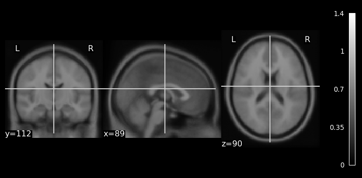

import math
from numbers import Number
import numpy as np
import tensorflow as tf
import nibabel as nb
from nilearn import plotting
from typing import List
import numpy.typing as nptA recent project required sending brain images to TensorFlow. Unfortunately, the data exceeded memory and so during training would need to be read from the disk. Poking around the TF documentation, it seems like a recommended way to do this is to store the images as a TFRecord. The steps for doing that are collected in this gist1.
There are five main steps
- load the images as numpy array,
- perform an preprocessing (e.g., resizing, masking),
- serialize the preprocessed images and store with their labels (all in memory) as a
tf.train.Example, - store (on disk) the examples as TFRecord, and finally
- create a
tf.Data.Datasetpipeline that serves the examples to the model.
Preprocess
A full implementation might involve several preprocessing steps (e.g., registration, masking, cropping), but in this gist we’ll just rescale the images to have intensity values that range from 0-1.
def to_numpy(img: nb.Nifti1Image) -> np.ndarray:
return np.asanyarray(img.dataobj)
def load_and_preprocess(img: str) -> np.ndarray:
# convert to numpy array and preprocess
nii = to_numpy(nb.load(img))
# rescale to 0-1
preprocessed = (nii - nii.min())/(nii.max() - nii.min()).astype(np.float32)
return preprocessedSince this method of storing data was new for me, I wanted to ensure that I didn’t mess up the data. For that, I mainly relied on a basic plot of the images.
def plot_array(img: np.ndarray) -> None:
nii = nb.Nifti1Image(img, affine=np.eye(4)*2)
plotting.plot_anat(nii)This first step is standard neuroimaging, but just to check that the functions are working preprocess an example brain and see how it looks.
# example images packaged with fsl, found at $FSLDIR/data/standard
img = ['MNI152lin_T1_2mm.nii.gz']
preprocesed = load_and_preprocess(img[0])
plot_array(preprocesed)
Great! That looks like a brain. I’ll use it as a reference to ensure that the roundtrip processing, serializing and unserializing, returns the arrays we need.
Serialize
Here’s where TensorFlow starts. As those that came before have always done, we’ll rely on these incantations.
def _bytes_feature(value: bytes):
"""
Returns a bytes_list from a string / byte.
Example:
_bytes_feature(b'\x00')
_bytes_feature(b'a')
"""
return tf.train.Feature(bytes_list=tf.train.BytesList(value=[value]))
def _float_feature(value: Number):
"""
Returns a float_list from a float / double.
Example:
_float_feature(2)
_float_feature(2.)
"""
return tf.train.Feature(float_list=tf.train.FloatList(value=[value]))Those functions seem to help ensure that the serialized data ends up with appropriate types. But the full steps involve serializing both the image and the label together.
def serialize_example(img: str, label: Number):
# convert to numpy array and preprocess
preprocessed = load_and_preprocess(img)
# Notice how the numpy array is converted into a byte_string. That's serialization in memory!
feature = {
'label': _float_feature(label),
'image_raw': _bytes_feature(tf.io.serialize_tensor(preprocessed).numpy())
}
return tf.train.Example(features=tf.train.Features(feature=feature))To get the image back out, we need two more functions: one to unpack/parse the example (decode_example) and another to unserialize/parse (parse_1_example) the unpacked example.
def decode_example(record_bytes) -> dict:
example = tf.io.parse_example(
record_bytes,
features = {
"label": tf.io.FixedLenFeature([], dtype=tf.float32),
'image_raw': tf.io.FixedLenFeature([], dtype=tf.string)
}
)
return example
def parse_1_example(example):
"""
Note that the network I was using worked with 3D images, and so the batches of data were of shape `(batch_size, x_dim, y_dim, z_dim, 1)`, rather than what is typical for 2d images: `(batch_size, x_dim, y_dim, n_channels)`.
"""
X = tf.io.parse_tensor(example['image_raw'], out_type=tf.float32)
# the images output by tf.io.parse_tensor will have shape (x_dim, y_dim, z_dim), which is to say that they're missing the channels dimension. expand_dims is used to indicate channel (i.e., be explicit about grayscale)
return tf.expand_dims(X, 3), example['label'] At this point, we have functions for preprocessing the images, serializing them2, and packing each of them along with their labels into a tf.train.Example. This is all for converting the data into a format that can then be more easily written to and read from the disk.
Write serialized examples as TFRecords
So far, everything has been in memory. Next comes a function that performs the above steps sequentially on several examples, and along the way writes the examples as a TFRecord.3
def write_records(niis: List[str], labels: npt.ArrayLike, n_per_record: int, outfile: str) -> None:
"""
store list of niftis (and associated label) into tfrecords for use as dataset
Args:
niis: files that will be preprocessed and stored in record
labels: true label associated with each element in niis. these are the "y"
n_per_record: number of examples to store in each record. TF documentation advises that the files are +100Mb. Around 400 images cropped images at 2mm resolution seems to work.
outfile: base prefix to use when writing the records
Returns:
Nothing, but the records will be written to disk.
"""
n_niis = len(niis)
n_records = math.ceil(len(niis) / n_per_record)
for i, shard in enumerate(range(0, n_niis, n_per_record)):
print(f"writing record {i} of {n_records-1}")
with tf.io.TFRecordWriter(
f"{outfile}_{i:0>3}-of-{n_records-1:0>3}.tfrecords",
options= tf.io.TFRecordOptions(compression_type="GZIP")
) as writer:
for nii, label in zip(niis[shard:shard+n_per_record], labels[shard:shard+n_per_record]):
example = serialize_example(img=nii, label=label)
writer.write(example.SerializeToString())Create Dataset
For this gist, let’s store several copies of the MNI 2mm brain.
# (e.g., put nifti of label MNI152_T1_1mm_brain.nii.gz in the working directory)
n_imgs = 3
mni_nii = ['MNI152lin_T1_2mm.nii.gz'] * n_imgs
# store examples in each tfrecord. number of examples per record is configurable.
# aim for as many examples as produces files of size > 100M
prefix = "tmp"
write_records(mni_nii, np.arange(n_imgs), n_imgs, prefix)writing record 0 of 0Calling the above will write a TFRecord file to disk. To read that record, define a pipeline that will create a tf.Data.dataset.
def get_batched_dataset(files, batch_size: int = 32) -> tf.data.Dataset:
# Note: an actual pipeline would probably include at least the shuffle and prefetch methods
dataset = (
tf.data.Dataset.list_files(files) # note shuffling is on by default, changes order when there are multiple records
.flat_map(lambda x: tf.data.TFRecordDataset(x, compression_type="GZIP"))
.map(decode_example)
.map(parse_1_example)
.batch(batch_size)
)
return datasetNow, use that function to read the records back.
# a full dataset will have a list with many records
list_of_records=[f'{prefix}*.tfrecords']
ds = get_batched_dataset(list_of_records, batch_size=2)That dataset, ds, was our goal in the gist. It can be passed to methods of the tf.keras.Model, including [tf.keras.Model.fit()(https://www.tensorflow.org/api_docs/python/tf/keras/Model#fit)], serving up more data than can fit in memory.
But first, the serialization is a lot, so it is a good idea to verify that the images look okay when loaded. To do so, pluck a single example from the dataset.
(Xs, Ys) = next(ds.as_numpy_iterator())The dimensions of the labels are relatively easy. It’s a 1d array with as many elements as are in the batch.
# (batch_size, )
Ys.shape(2,)The order will depend on what shuffling is embedded in the dataset pipeline. In this case, there was no shuffling and so we should expect that the order is preserved.
Ysarray([0., 1.], dtype=float32)The data, Xs, also has a predictable shape.
# (batch_size, x_dim, y_dim, z_dim, 1)
Xs.shape(2, 91, 109, 91, 1)Take that first element in the batch and plot.
parsed_img = np.squeeze(Xs[0,])
plot_array(parsed_img)
That looks great! Just in case, let’s check more explicitly
np.array_equal(preprocesed, parsed_img)TrueYay! done
Footnotes
Inspiration for writing came from responding to this question on NeuroStars, and also from an urge to try a python-based post.↩︎
This serializing stuff is spooky black magic. I’m going to skip over those details and instead leave this reference, a journey through serializing in
Rhttps://blog.djnavarro.net/posts/2021-11-15_serialisation-with-rds/.↩︎It seems to me that this storage on disk involves a second serialization step (where the first was done by
tf.io.serialize_tensorinserialize_example). Even so, I assume the roundtrip isn’t so much of a big deal, considering that the data can be served to the model in parallel.↩︎